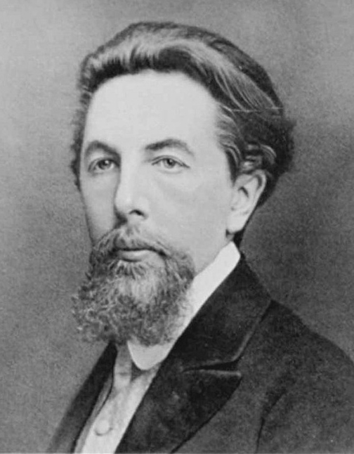

Université M'Hamed Bougara (Boumerdès)
Institut National des Industries Manufacturières
(INIM) était un institut technique supérieur algérien, créé en 1987 par la restructuration de l'INIL, spécialisé dans la formation industrielle. En 1998, il a été intégré au regroupement de six instituts nationaux pour former l'Université M'hamed Bougara de Boumerdès (UMBB)
la chromatographie
Aujourd’hui, on vas vous présenter la chromatographie qu'elle été une technique très importante en chimie et en biologie. Elle permet de séparer les différents constituants d’un mélange afin de les identifier et de les analyser. Cette méthode est largement utilisée dans les laboratoires de recherche, dans le domaine médical ainsi que dans l’industrie. Au cours de cette intervention, nous allons voir les éléments essentiels qui permettent de comprendre cette technique.
- Définition
- Principe
- Applications en biologie
- Avantages et limites
- Types de chromatographie
- Aperçu historique

membres
| nom | prenom | group | sous group | matricule |
|---|---|---|---|---|
| Boukhlifa | mohamed el amine | 4 | 8 | 222231362512 |
| rachedi | anais | 4 | 8 | 222231228017 |
| derouiche | maria | 4 | 8 | 242431229403 |
| bechar | chaima | 4 | 8 | 242431248401 |
| hherra ikram | some one | 4 | 8 | 242431236102 |